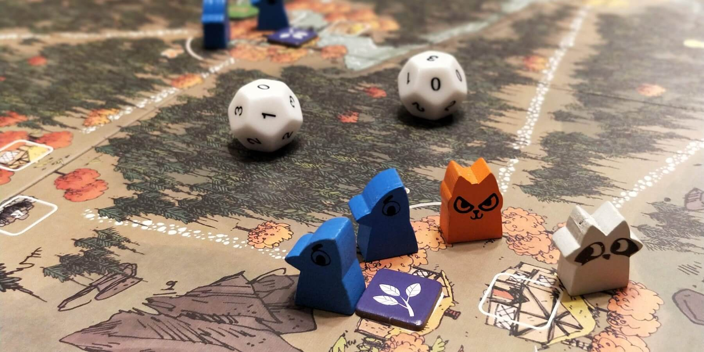

If you want a new game like Risk, try these 3 board games


Growing up, Risk was always one of the board games, alongside Sorry, Monopoly, and Scrabble. It’s satisfying to plan a grand strategy and win territory in Risk, but each game takes so long to play (and often is never finished at all)!
These modern games build on many of Risk’s mechanics but deliver a more balanced and engaging experience with a shorter play time.
Root
Root is a game of adorable woodland creature warfare. You and your opponents each play as a unique faction of critters to spread across the map, fight for rule, and score points to win. Root has been one of our favorite games of all time since its release, with every matchup being interesting and competitive.
The best aspect of Root is its asymmetric factions that operate and score points in entirely different ways. Marquise de Cat focuses on wide map presence and building many structures. The Eyrie are relentless and must follow an ever-growing list of commands. And the Vagabond controls only a single piece, focusing on quests and managing items.
In Root, multiple factions can coexist in a given clearing, with rule being determined by the number of warriors and buildings present. Battles are decided by dice rolls (but more balanced than Risk), and cards can be used to influence the outcome of current and future battles.
Look no further than Root if you want a satisfying follow-up to Risk. There are more rules to learn, but once you and your friends know the game and factions, play time will drop below 2 hours.
Buy Root on Amazon
Small World
Small World is a pure territory control game which plays like Risk without dice rolls. The flow of the game is fun and lighthearted, and it takes the least amount of time to play out of the games on this list.
Throughout the game, players take turns placing their faction tokens on regions on the board to indicate ownership. Once the map is filled, players can spend additional tokens to capture their opponents’ regions. Players score points each round based on how many total regions they control, which creates a balanced path to victory.
The factions in Small World each have their own abilities to add asymmetry to the game. The Giants are better at conquering mountain regions, while Dwarves gain extra points for controlling Mine regions. The Ratmen simply have strength in numbers by having more tokens than any other faction.
Small World has a lot of replayability due to the many faction combos you get to play, and it’s a great introduction to games with asymmetric player abilities.
Buy Small World on Amazon
A Game of Thrones: The Board Game
A Game of Thrones: The Board Game is a territory control game that does justice to the series, with players acting as one of the high Houses - Stark, Baratheon, Lanister, Martell, Greyjoy, or Tyrell. It may take as much time to play as Risk, but GoT has many more mechanics to strategize around.
Each turn, players commit their units to perform actions like marching to attack an area, defending an area, and consolidating power. Players choose these actions without knowing the decisions of their opponents, but then they reveal and resolve them in turn order.
Preparing to attack in GoT is straightforward, but each House can play combat cards with varying strengths and abilities that can turn the tide of battle. Battling is not everything however; choosing to consolidate power will allow you to increase your standings on influence tracks, which can improve your turn order and give you access to more potent actions.
This game has everything you would want in a successor to Risk, including the chance to pull off an epic nail-biting victory. The GoT theming makes this game really stand out, and it’s fun to play as the characters you know and love. However, these mechanics are still great even if you’re not a fan of the series.
Buy A Game of Thrones: The Board Game on Amazon
Honorable Mentions
These games also feature territory control in addition to other neat mechanics. These are a great choice if you're looking to branch out!
Rising Sun is a premium board game with a feudal Japan theme that mashes up area control and deception. At the heart of Rising Sun are its beautifully crafted miniatures that will demarcate your territory on the map. Each turn, you’ll secretly allocate resources to bid on available actions such as moving or recruiting units. You can form an alliance with another player to gain access to their action as well, but run the risk of Betrayal at an opportune moment! It’s up to you how you’ll focus on scoring points and whether you’ll follow an Honorable path or not. If you’re willing to pay more for high-end components, Rising Sun will reward you with a top tier experience and a lot of replayability.
Buy Rising Sun on AmazonTicket to Ride is worth mentioning here as a family-friendly route-building game, which is an offshoot of the territory control mechanic. This one has a very approachable railroad theme, and it’s definitely worth trying if you haven’t played it yet. Players collect colorful train cards and then construct routes on the map by cashing in enough matching cards, aiming to connect cities shown on their route cards. This game is easy to learn, but its strategy can be tough to master. It’s always satisfying to pull off a win, especially if you go for a big route that spans the United States!
Buy Ticket to Ride on AmazonScythe is a popular strategy game that mixes resource management, area control, and asymmetric player factions. Unlike many combat-oriented games, players are able to to diversify their strategies in Scythe. Non-combat objectives include upgrading actions, building structures, and deploying workers for resource production. Playing defensively, keeping your territory safe, and focusing on production is not only a viable winning strategy but necessary depending on how your opponents play. Scythe is definitely worth checking out, and it has tons of expansion content to build on the experience!
Buy Scythe on AmazonWant more recommendations or have feedback for us? Send an email to support@spiralburst.com and we'll get back to you!